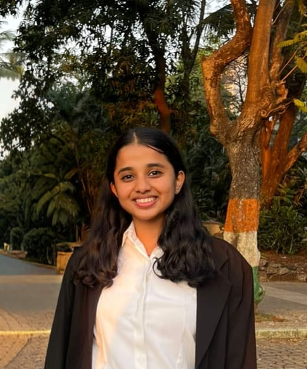

01
Cultural Forum Head
Junior College
Led the Cultural Committee and managed multiple college events. Coordinated with teachers, students, volunteers and participants to support the planning and execution of events.
UNDERGRADUATE STUDENT · MUMBAI, INDIA
HELLO, I'M
Creating connections. Making things happen.
A curious mind with an interest in marketing, branding, communication and the ideas that bring people together.
GET TO KNOW ME ↓
A little ambition, a lot of curiosity.
01 / A LITTLE ABOUT ME
I am an undergraduate student pursuing the BBA in Digital Business and Entrepreneurship at IIM Bangalore, alongside a BMS degree at Jai Hind College, Mumbai. I enjoy bringing people together, taking initiative and turning ideas into meaningful experiences. Through my experiences in student leadership, cultural activities and anchoring, I have developed interests in marketing, branding, communication, event coordination and understanding consumer behaviour. I look forward to exploring new opportunities, learning continuously and building skills that help me create meaningful impact.
To learn, grow and gain practical experience in areas related to marketing, branding and communication while contributing creativity, initiative and a willingness to take responsibility.
02 / THE ACADEMIC SIDE
Learning, exploring and building a foundation for what's next.
02 / THE ACADEMIC SIDE
Learning, exploring and building a foundation for what's next.
| Institution | Qualification | Academic Year |
|---|---|---|
| IIM Bangalore | BBA in Digital Business and Entrepreneurship | Ongoing |
| Jai Hind College, Mumbai | Bachelor of Management Studies (BMS) | 2026–2029 |
| K.J. Somaiya Junior College of Arts and Commerce | Higher Secondary Certificate (HSC) – Commerce | 2024–2026 |
| Sri Ma Vidyalaya, Thane | Secondary School Certificate (SSC) | 2013–2024 |
03 / TAKING INITIATIVE
01
Junior College
Led the Cultural Committee and managed multiple college events. Coordinated with teachers, students, volunteers and participants to support the planning and execution of events.
02
School
Represented the student body, coordinated school activities and worked with teachers to organise and manage various school events.
03
Junior College
Took on a leadership role in the anchoring department, contributing to programme hosting and coordination of college activities.
04
School
Handled the school News Department and its related activities and responsibilities.
04 / BEYOND THE CLASSROOM
Being part of teams, working behind the scenes and helping bring college initiatives to life.
01 Organizing Committee Member — Talaash, Cultural Fest
02 Organizing Committee Member — Jai Hind Business Conclave
03 Organizing Committee Member — Entrepreneurship Cell & Skill Hub
05 / WHAT I BRING
06 / LITTLE MILESTONES
2025–26
K.J. Somaiya Junior College of Arts and Commerce
Various Years
Recognised through wins in several inter-school and inter-collegiate competitions.
07 / LANGUAGES